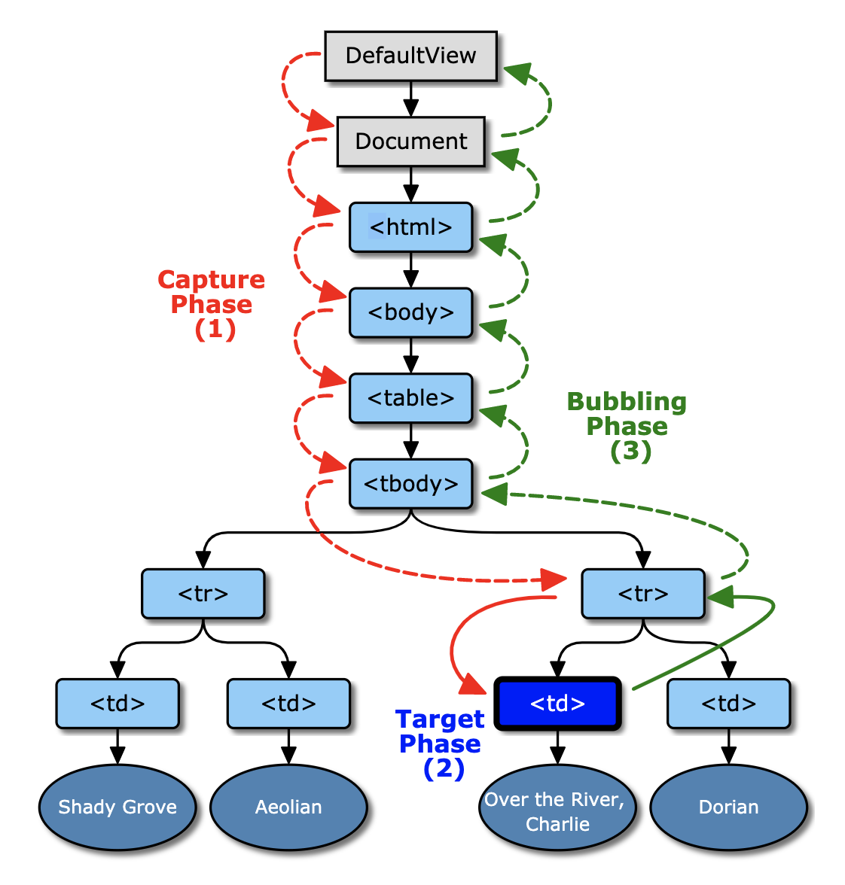

(1) Question:
What is DOM and what is the purpose of DOM ?

DOM Tree in a glimpse
Answer:
DOM stands for Document Object Model. Dom is a World Wide Web
Consortium web standard which defines the standard for accessing
documents on web sites.
There are three standard parts of DOM
-
Core DOM - It is a standard model for
all types of documents on the web pages.
-
XML DOM - It is a standard model for
all types of XML documents on the web pages.
-
HTML DOM - It is a standard model for
all types of HTML documents on the web pages.
HTML DOM in short - is a set of standard to get, add, change and
delete HTML elements on web pages.
(2) Question:
How will you select html elements using DOM ? Name the DOM methods ?
Answer:
There are six methods of selecting DOM elements in HTML using
JavaScript.
-
getElementById() - It is a method to
access HTML elements on the web pages.
-
getElementsByTagName() - It is a
method to access HTML elements with tag names on the web pages.
-
getElementsByClassName() - It is a
method to access HTML elements with class names on the web pages.
-
getElementsByName() - It is a method
to access HTML elements with tag names on the web pages.
-
querySelector() - It is a standard
model that returns the first element that matches the specified
selector.
-
querySelectorAll() - It is a standard
model that returns elements that match the specified selector.
(3) Question:
What is event bubble ?

Answer:
In DOM Document Object Model- Event Bubbling happens when an element
receives an event, and that event bubbles upward or better it to say
the event propagates up to its parent and ancestor elements in the DOM
tree until it reaches to the root element of the DOM it is included
in. The picture above will give a visual glimpse of the idea of event
bubbling in JavaScript.
-
stopPropagation()- It stops event
bubbling.
-
stopImmediatePropagation() - In the
stopImmediatePropagation() method the method prevents other
listeners of the same event from being called further.
-
Event Bubble - Propagates upward to
its parent as has been shown in the picture.
-
Event capture - Propagates downward
as has been shown in the picture.
(4) Question:
What is a callback function and why will you use it ?

Answer:
A callback function is a function passed as a parameter of another
function. This allows a function to call a function back or later when
the former finishes. When Callbacks are used, they make sure that a
function is not going to run before a task is completed but will run
right after the task has completed. In this way the callback functions
helps developers/ programmers to develop asynchronous JavaScript code
and keep the code safe from various problems and errors that comes in
the way of their coding. In the picture above the the callback
function will be called after 1 second of the setTimeout() function
finishes its execution. it is an an example of asynchronous behaviour
of JavaScript.